.JPG){kind=link}


Santiago
Hotel Magnolia
Boutique hotel in central Santiago, near Santa Lucía Hill and Lastarria, with forty rooms and suites, a bistro, rooftop bar, spa and gym.
Check roomsOfficial hotel website · opens in a new tab
South America / A place to get to know
Desert skies, Pacific culture and Patagonia's granite peaks

Welcome to Chile
Chile runs between the Andes and the Pacific, taking in Atacama desert landscapes and the lakes and glaciers of Patagonia. Santiago's historic centre and Rapa Nui's monumental heritage reveal very different chapters of the country's story.
Explore a little further
Landmarks, landscapes and the stories behind them. Select a photograph for a closer look.
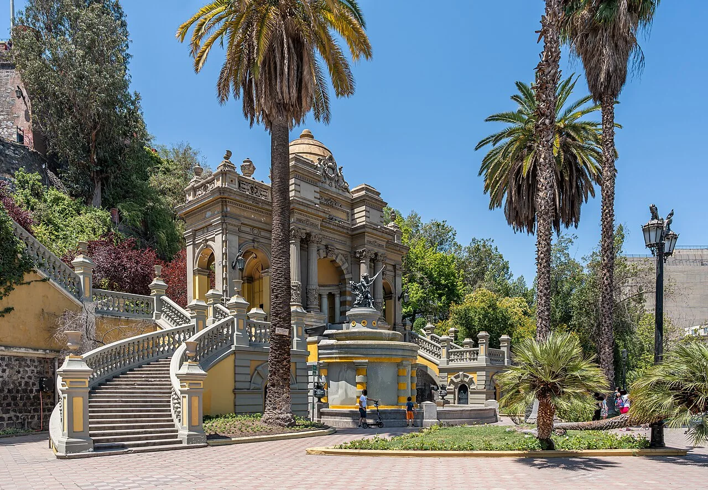
This landscaped rocky hill rises within central Santiago, offering paths, terraces and city views. It is closely associated with the Spanish foundation of Santiago in 1541.
Rjcastillo · CC BY-SA 4.0 . Resized as needed and converted to WebP. No crop.
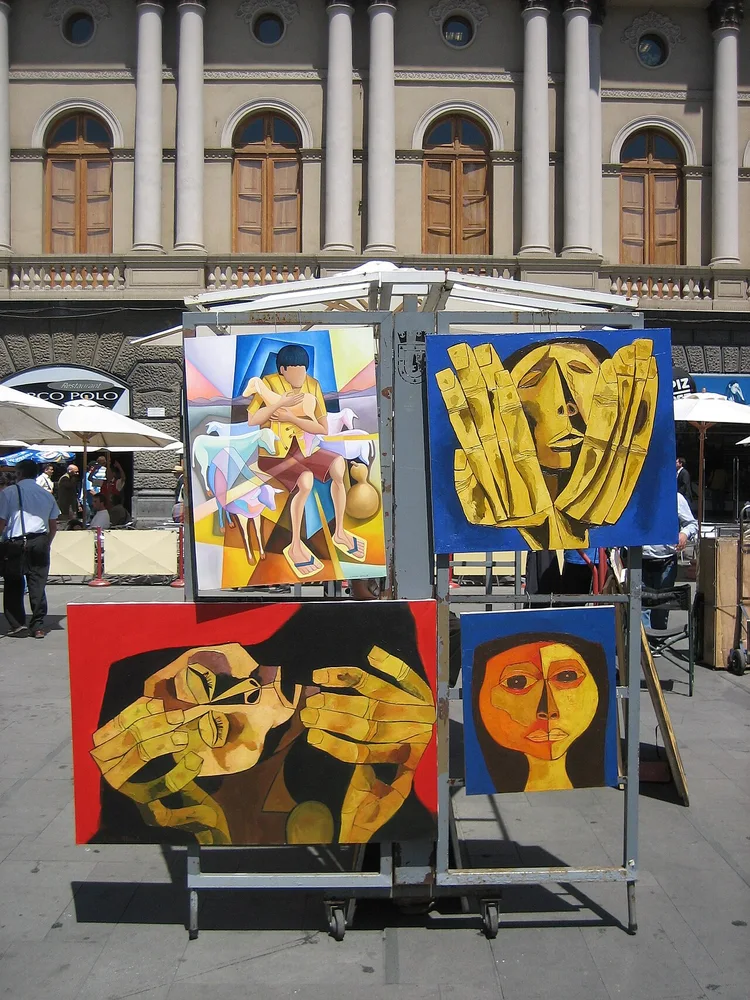
Santiago's main square forms the heart of its historic centre. The Metropolitan Cathedral and important civic buildings frame a public space that connects the city's colonial origins with contemporary street life.
Stefano Vigorelli · CC BY-SA 4.0 . Resized as needed and converted to WebP. No crop.
Granite towers and the Cuernos del Paine rise above lakes, glaciers, forest and Patagonian steppe. The national park's contrasting habitats support wildlife including guanacos, condors and pumas.
Pedro Szekely from Los Angeles, USA · CC BY-SA 2.0 . Resized as needed and converted to WebP. No crop.
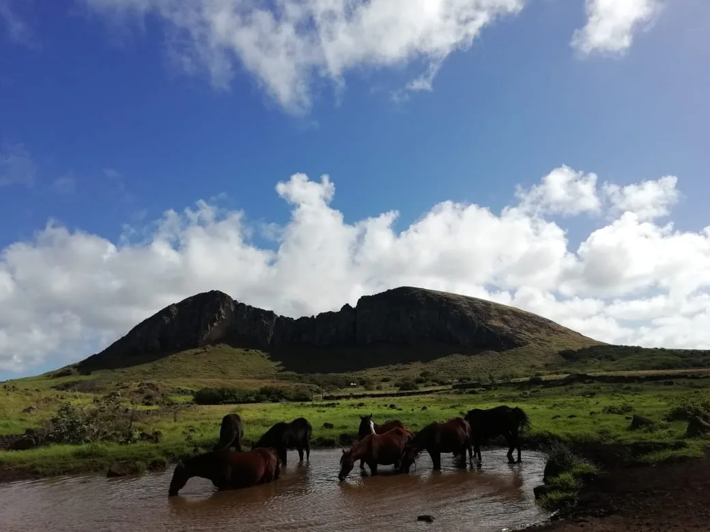
The park preserves monumental moai statues, ceremonial platforms and other traces of Rapa Nui society. Its World Heritage landscape records the distinctive sculpture and architecture developed by the island's Polynesian people.
Yayaymane · CC BY-SA 4.0 . Resized as needed and converted to WebP. No crop.
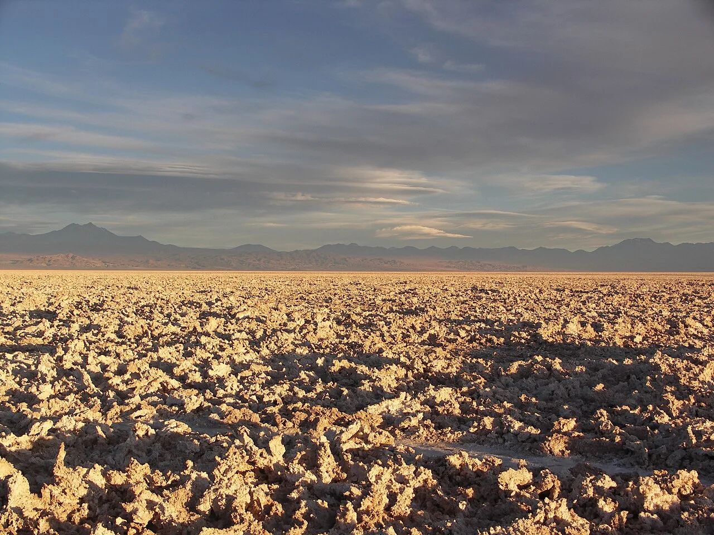
Chile's largest salt flat lies near San Pedro de Atacama. Salt crusts, lagoons and surrounding desert mountains create a stark landscape, with protected wetland areas providing habitat for flamingos.
Simon Prisner · Public domain . Resized as needed and converted to WebP. No crop.
Explore a little further
Chile's cultural landscape includes Mapuche traditions, Rapa Nui's Polynesian heritage and northern festivals such as La Tirana. Santiago's museums and Pablo Neruda's La Chascona add art and literature to the picture.
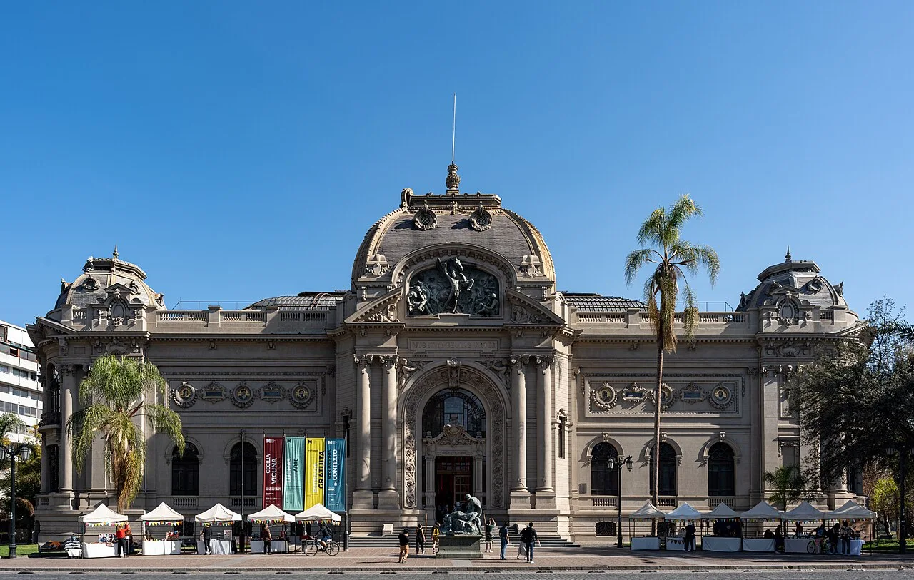
Chilean National Museum of Fine Arts
Iswzo · CC BY-SA 4.0 . Resized as needed and converted to WebP. No crop.
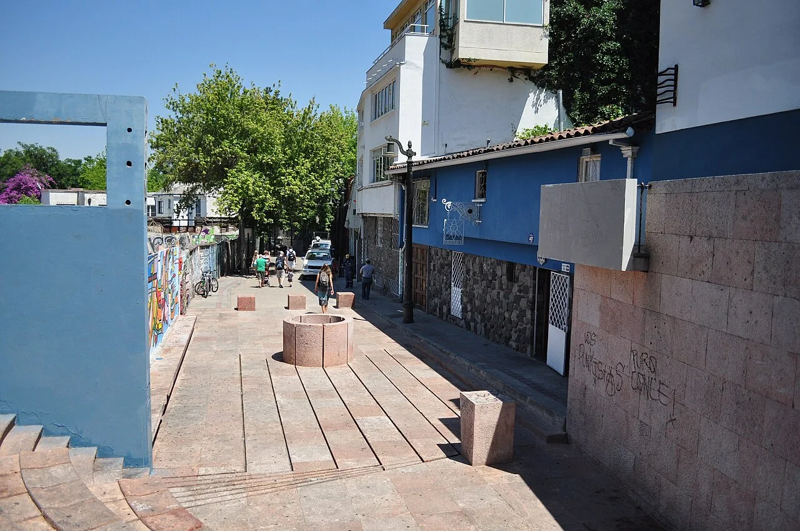
La Chascona
Arturo Rinaldi Villegas · CC BY-SA 3.0 . Resized as needed and converted to WebP. No crop.
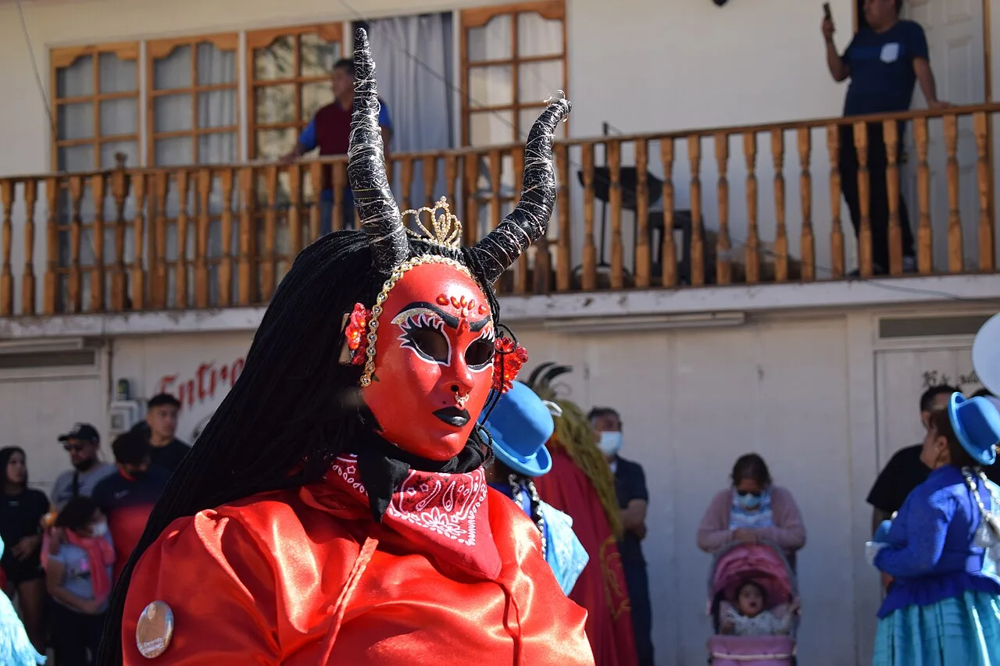
Fiesta de La Tirana
Asugomez · CC BY-SA 4.0 . Resized as needed and converted to WebP. No crop.
Explore a little further
Corn, seafood, pastoral cooking and regional produce shape a cuisine that includes pino-filled empanadas and dishes from both coast and countryside.
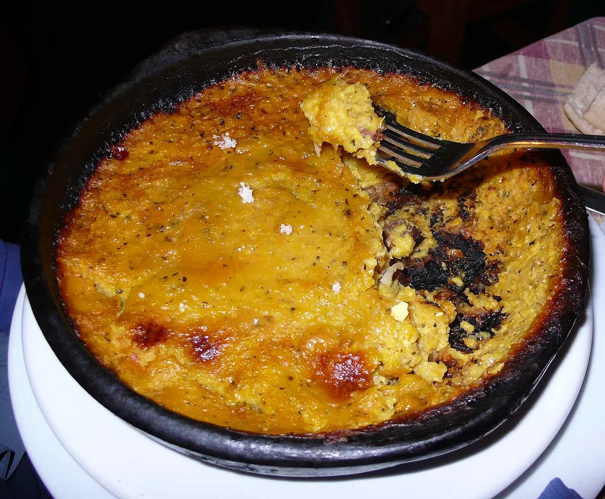
A sweetcorn topping covers a savoury filling that commonly includes beef and onion, with chicken, egg, olives or raisins in different preparations.
Paloma Baytelman from Santiago, Chile · CC BY-SA 2.0 . Resized as needed and converted to WebP. No crop.
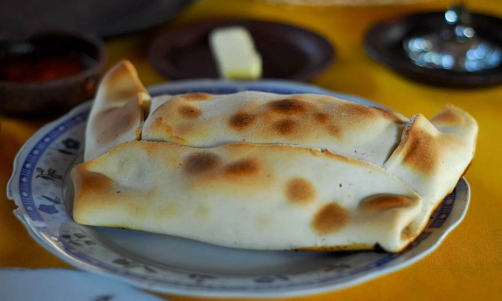
This Chilean pastry encloses a pino filling of seasoned beef and onion, commonly joined by egg and an olive.
J B from Champaign, IL, USA · CC BY 2.0 . Resized as needed and converted to WebP. No crop.
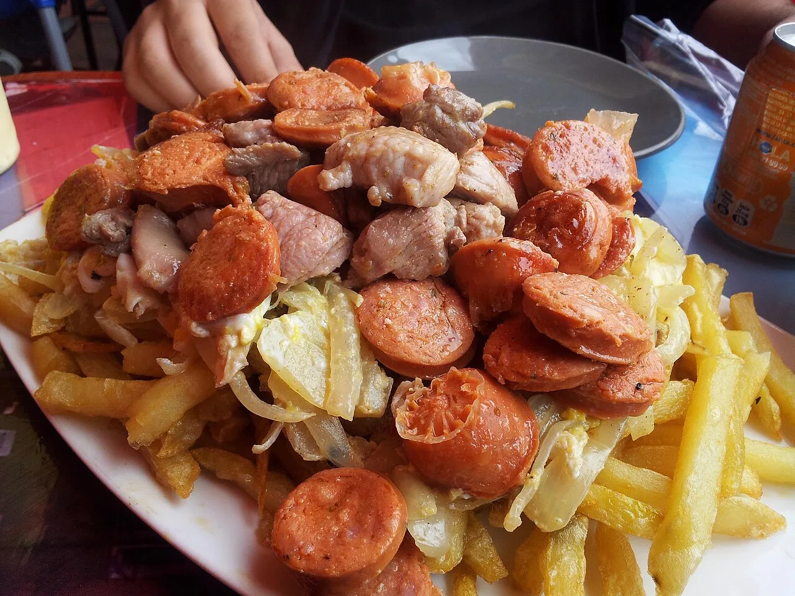
Chorrillana piles fried potatoes with meat and other toppings, often including sausage, onion and egg.
Nereidas · CC BY-SA 3.0 . Resized as needed and converted to WebP. No crop.
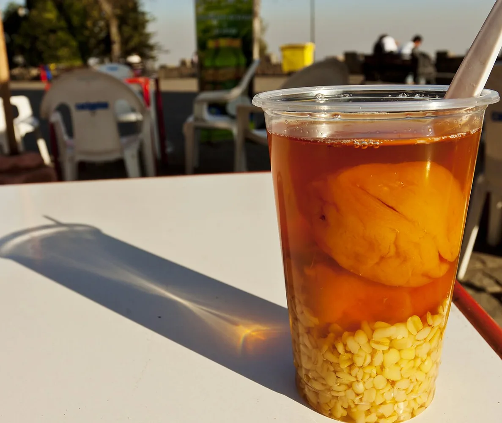
Cooked wheat grains and dried peaches are served cold in a sweet spiced syrup, making a drink substantial enough to eat with a spoon.
Nellu Mazilu from Mobile, Terra, Sol, Milky Way · CC BY 2.0 . Resized as needed and converted to WebP. No crop.
Explore a little further
Santiago's hillside transport, Andean ski areas and Atacama's geothermal landscapes show the range of experiences across Chile.
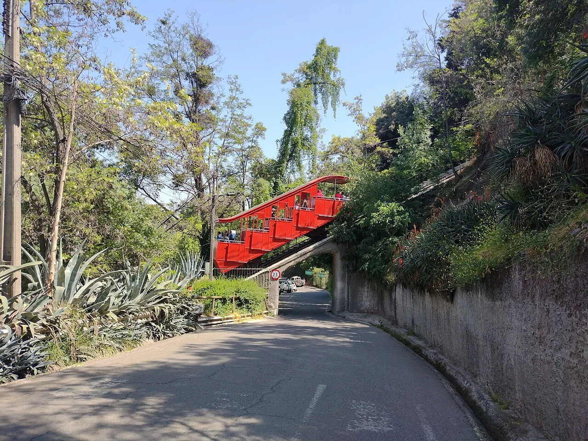
Ride the historic funicular up San Cristóbal Hill in Santiago's Metropolitan Park, then explore the viewpoints and surrounding park paths.
Sfs90 · CC BY-SA 4.0 . Resized as needed and converted to WebP. No crop.
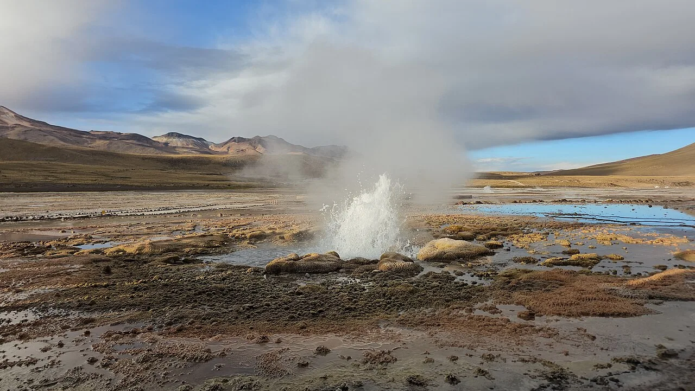
Visit the high-altitude geothermal field with an organised excursion to observe steam vents and geysers from designated areas.
Alexarje · CC0 . Resized as needed and converted to WebP. No crop.
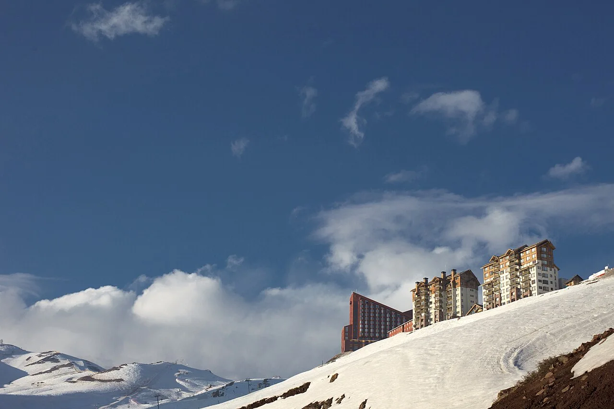
Visit this Andean mountain resort above Santiago for alpine scenery and seasonal skiing or snowboarding when snow conditions and operations allow.
Jimmy Baikovicius · CC BY-SA 2.0 . Resized as needed and converted to WebP. No crop.
Explore a little further
Santiago's restaurants and performance venues bring life to the evening, with viewpoints such as Sky Costanera offering another perspective on the illuminated city.
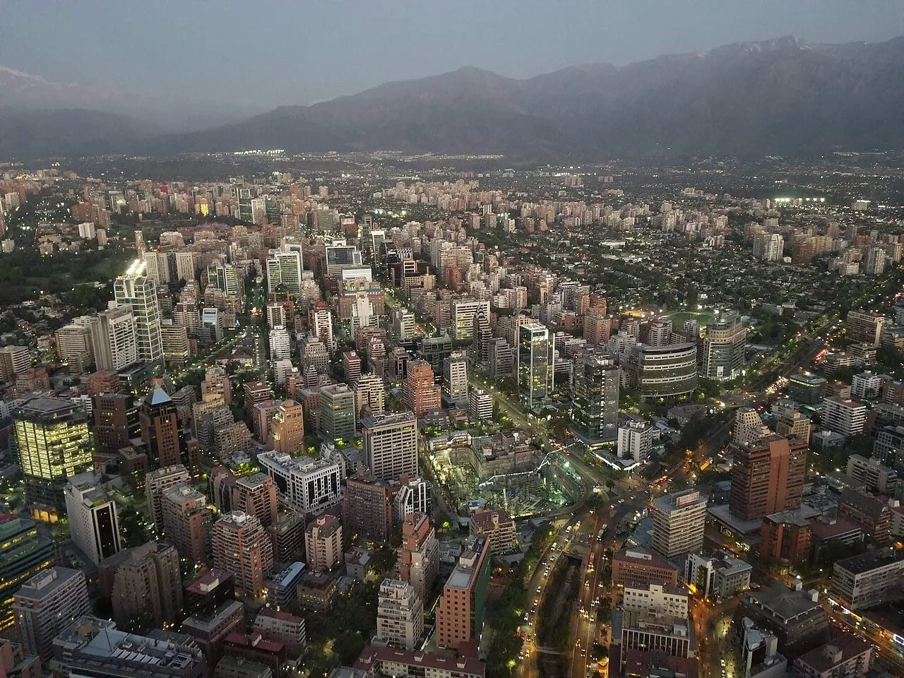
Sky Costanera
Charles Hancock · CC BY-SA 4.0 . Resized as needed and converted to WebP. No crop.
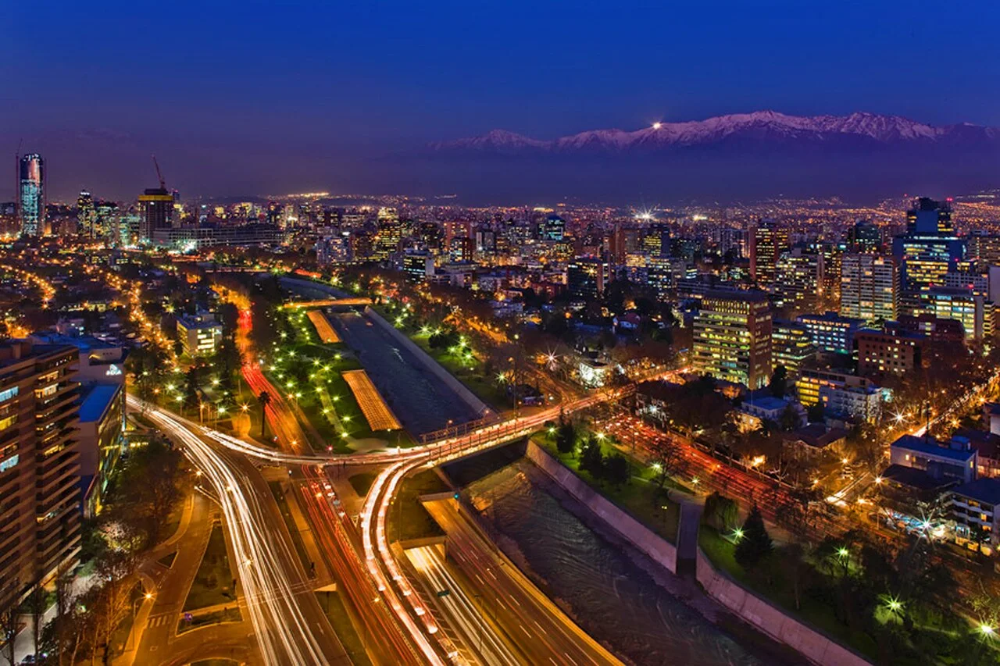
Santiago de Chile at night
Javmoraga · CC BY-SA 3.0 . Resized as needed and converted to WebP. No crop.
Explore a little further
A country overview with selected attraction markers. Use local transport information to plan the route between regions.
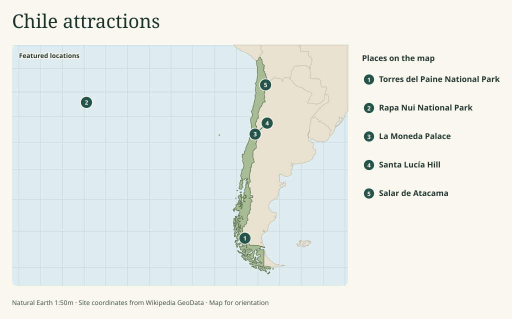
Illustrative overview. Marker locations and map sources are documented below.
A place to settle in
Two places to consider for your trip. Check room choices, current prices and availability directly with each hotel.
Santiago
Boutique hotel in central Santiago, near Santa Lucía Hill and Lastarria, with forty rooms and suites, a bistro, rooftop bar, spa and gym.
Check roomsOfficial hotel website · opens in a new tab
Santiago
Hotel in Santiago's Lastarria neighborhood, with rooms and suites, a rooftop bar, restaurant and spa offering a sauna, steam room and relaxation areas.
Check roomsOfficial hotel website · opens in a new tab
The hotel sets its prices, booking terms and payment currency. Some properties confirm reservations after an enquiry.
Know your money
Get familiar with the local currency and estimate what an amount in your own currency is worth.
Daily reference Rates By Exchange Rate API . The rate date appears with your estimate.
Morning to evening · Chile
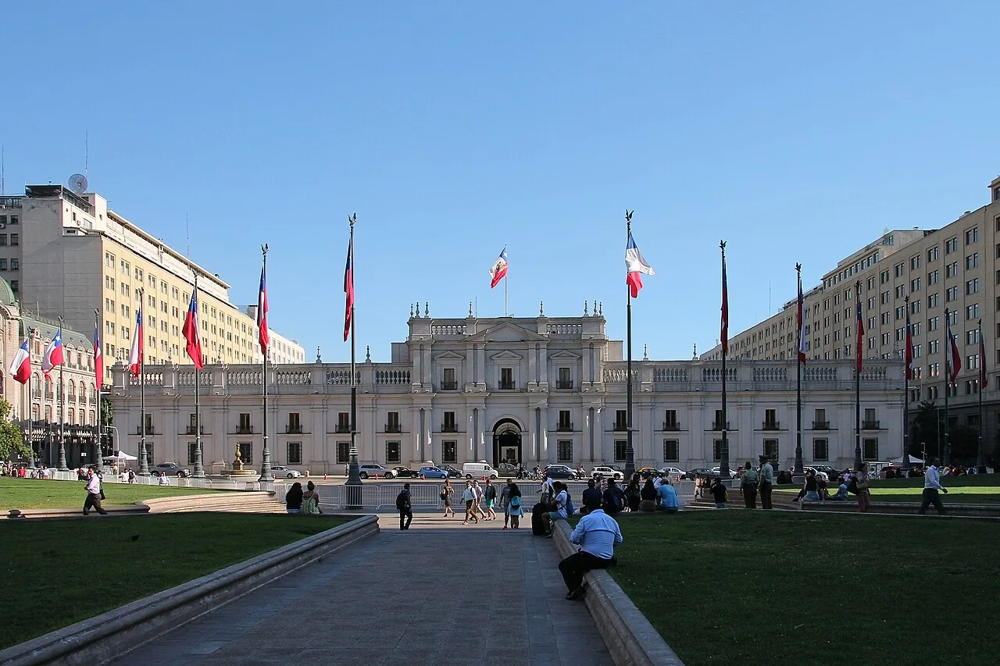
Draceane · CC BY-SA 4.0 . Resized as needed and converted to WebP. No crop.
Stefano Vigorelli · CC BY-SA 4.0 . Resized as needed and converted to WebP. No crop.
Rjcastillo · CC BY-SA 4.0 . Resized as needed and converted to WebP. No crop.
Charles Hancock · CC BY-SA 4.0 . Resized as needed and converted to WebP. No crop.
Suggested order and approximate times, with breaks for meals and travel. Confirm access, reservations, transport and operating hours locally. Evening photographs do not guarantee an event or performance.
Confirm arrangements with the official visitor resource .
Visitor resource: https://chile.travel/en/
Guide: Atlas & Away · Chile · researched 18 November 2026.
Explore a little further
A starter in Spanish. The pronunciation hints are approximate; listen to local speakers and ask politely when unsure.
| Phrase | Meaning | Say it approximately |
|---|---|---|
| Buenos días. | Good morning. | — |
| Bien, gracias. | I’m fine, thank you. | — |
| ¿Cuánto cuesta? | How much is it? | — |
| ¿Habla inglés? | Do you speak English? | — |
| La cuenta, por favor. | The bill, please. | — |
A little preparation
0 of 4 preparations complete
Saved places and checklists use this browser’s local storage. They are not an account or a booking.
Before you go
The example itinerary stays around Santiago. The full country guide covers several regions; allow extra days and transport for places beyond that route.
Use the Hotels section to open a property’s official website and check rooms, prices and booking terms. You complete any reservation and payment with the hotel.
Open the enquiry page or email profannan712@gmail.com .
Guide researched on 18 November 2026. Text and code were developed with ChatGPT/Codex assistance for this student learning project.
Phrase reference: Spanish phrasebook .
Natural Earth (base data), ChatGPT in Codex (map design) · Public-domain Natural Earth base data . Projected Natural Earth boundaries, added labels and site markers, and exported SVG.
_02.jpg){kind=link}